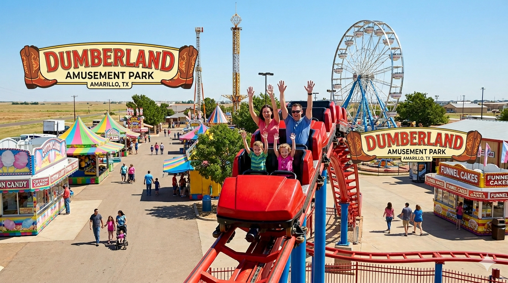
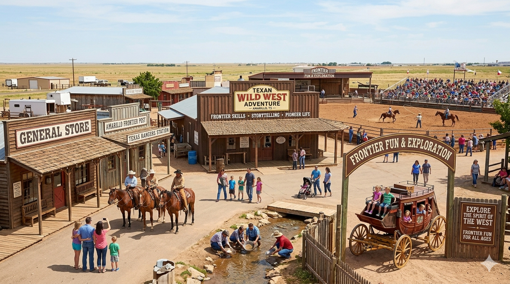
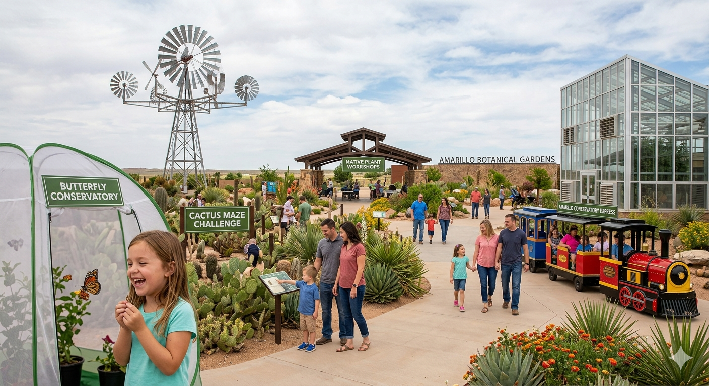
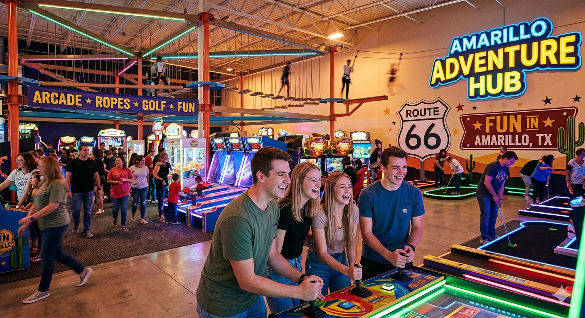
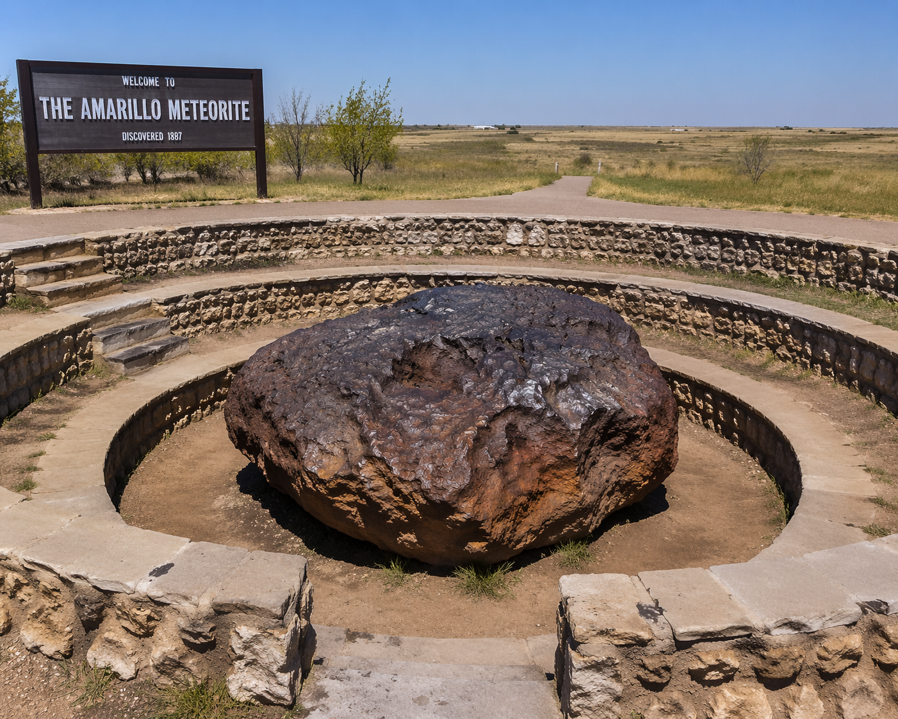
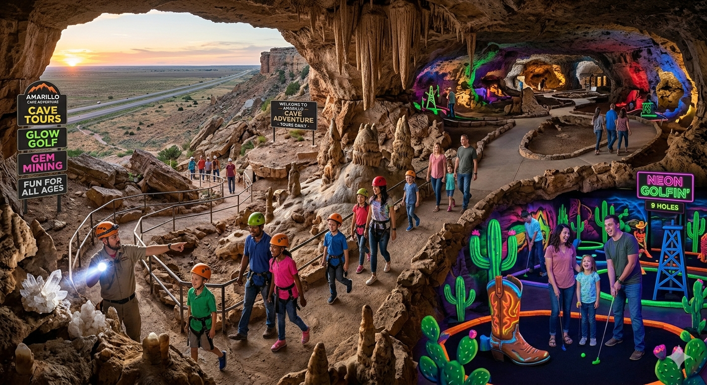
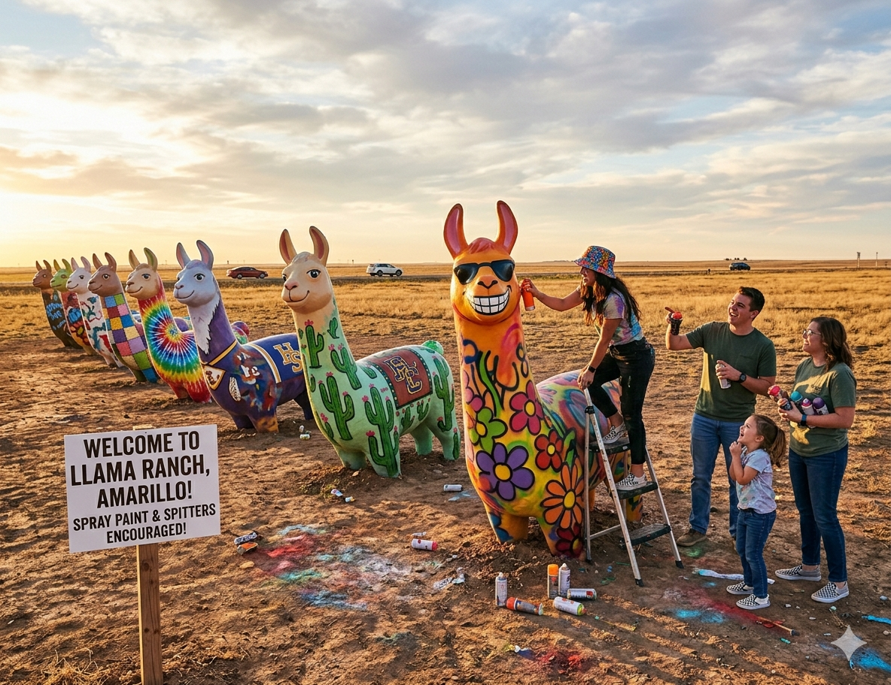

Explore Amarillo
Click a location below to discover what Amarillo has to offer.

Dumberland
Dumberland Amusement Park may have a funny name, but it delivers seriously good times. Between the rides, games, and classic fair food, you’ll be smiling from start to finish. Turns out, the only dumb thing would be not going.






